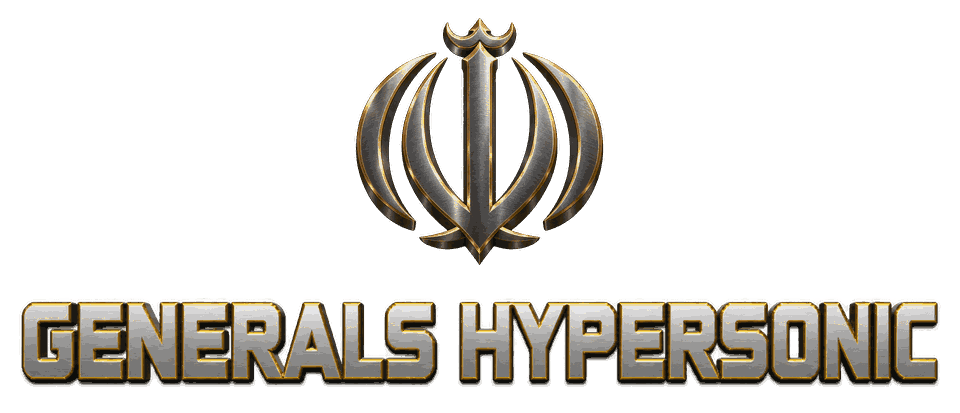

Prepare. Launch. Reload.
Stock your facilities with drones and missiles, then launch salvos at targets across the map.
- Drone Facility
- Ballistic Missile Facility
EA has not endorsed and does not support this product.
The fourth faction / Iran

A free fan mod for Command & Conquer: Generals – Zero Hour. Iran joins as a fourth faction, with strike drones and ballistic missiles.
In Hypersonic, Iran strikes from range with ballistic missiles and drones, and defends its airspace with surface-to-air missiles.
Stock your facilities with drones and missiles, then launch salvos at targets across the map.
Ballistic missiles from the Fateh-110 to the hypersonic Fattah. Enemy air defenses can intercept them, so speed and salvos matter.
Superweapon Khorramshahr: one missile, ten warheads.
Pick a point on the map and the strike drones head there on their own. Cheap and expendable, so send several.
Tanks and rocket artillery finish what the missiles and drones start.
SAM sites and mobile launchers shoot down aircraft and missiles. Anti-tank bunkers stop armored attacks.
Closed alphav1.0.0-alpha.1Windows PC
This alpha is available by invitation only. Invited testers receive access instructions.
There is no public download or tester sign-up form on this site yet. The public download will be posted here when it is ready.
Skirmish vs AI and multiplayer. The Android build is experimental.
HypersonicZH.exe from the portable folder.Installation guide (.txt)Release notes and known issues (.txt)
This release is unsigned, so Windows SmartScreen may warn that it is unrecognised. Choose More info, then Run anyway. Smart App Control can still block it. About Windows security warnings
This alpha includes skirmish against the AI and multiplayer. Expect bugs, unfinished art and balance changes. Multiplayer requires everyone to use the same mod and engine build. Campaign missions and Generals Challenge are not included.
Extract the ZIP into its own folder, outside your Zero Hour folder, and run HypersonicZH.exe. If the game is not found, follow the portable setup instructions.
Checksums will accompany the release packages.
Include your mod version, the steps to reproduce the problem, what happened and what you expected. Add the map, factions and AI difficulty, if they apply. Attach a replay if you have one and, after a crash, ReleaseCrashInfo.txt from Documents\Generals Hypersonic Data.
Use the template to prepare your report. A submission link is not available on this site yet.
Help bring the next alpha to more Zero Hour players.
Generals Hypersonic is free and made by one developer, MxAlmousawi. You can support the development and testing of the next alpha.
Donations are not open yet. The donation link will appear here.
Donations support the developer's time and the costs of making and testing the mod: development, testing and tools.
Donations are optional, unlock nothing in the game and do not buy tester access.
You can also help by telling other Zero Hour players about the mod and reporting the bugs you find.